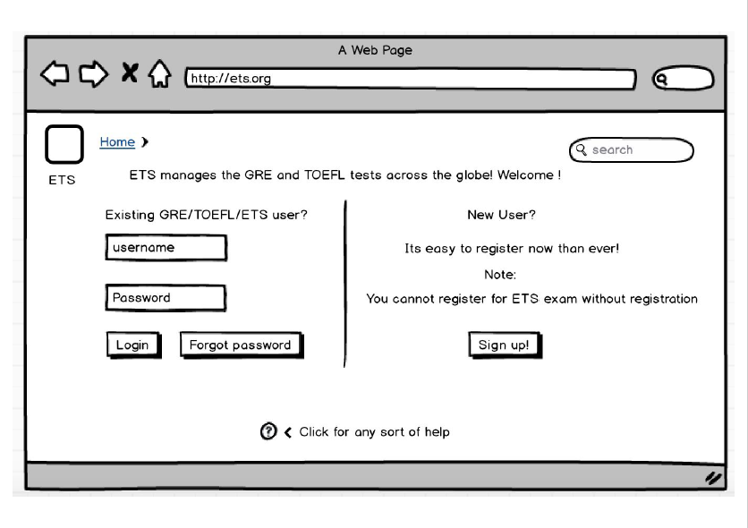
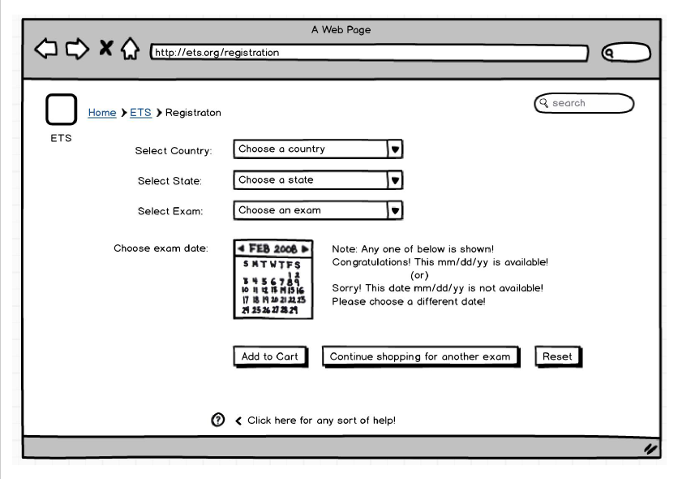

- 
-

- 
ETS TOEFL Registration
Registering for TOEFL is a student's nightmare. Further, sending scores to each university through TOEFL website, sometimes require a "youtube - How to" video to accomplish it.
I chose ets.org/toefl site because it fairs poorly on learnability, memorability and efficiency fronts. Though the ‘Register now’ is visible, it does not help accomplish the user to register for TOEFL. Let me analyze the site in terms of following usability traits/characteristics.
Intuitive Design
On clicking ‘register now’ it takes you to a page, which is shown below (first picture). The highlight of that page is that there is a redundant ‘register online’ at the bottom of the page. After another 2pages of pictures, there is one more button – ‘find toefl ibt test centers/register’. It is not intuitive for the user on when he can actually complete the registration. The irony is that, you can’t complete the registration, till you login, and the site gives this feedback at the very last page when you have selected the test centers.Ease of learning
I would rate this very poor for this site, because, I myself struggled as a first time user and have helped many of my friends’ register, as they were not able to complete the registration in the first time.Efficiency of use
As a user of Toefl site for around 2 months, each time I used it, as I was navigating back and forth to accomplish a task, sometimes even watching a youtube video to accomplish a task. Numerous ‘register now’, ‘register online’ buttons in various pages so it’s very easy for the user to get lost.Memorability
Same TOEFL amount of $190 seems redundant on the page, plus the available date information is so cluttered. The naming of button as ‘Find toefl ibt test center / Register’ is a misnomer because it only allows the user to find a test center here and not actually register. Also, the layouting is different on different browsers like Safari, Chrome, IE etc, which makes it more difficult to memorize.Error frequency and severity
The irony is that if you have already registered for GRE with ETS, if you try to register with same user name, it would complain saying user is already existing, but if I try to login using same password as used for GRE, it would ask me to register for TOEFL. It took me a day to figure out that I will have to register for TOEFL using same userID but different password.Subjective Satisfaction
I’m a highly dissatisfied user of TOEFL site, though the GRE site fared slightly better than TOEFL.Ideation and Redesign
Since ETS is managing both GRE and TOEFL, it highly makes sense to have a fluent single sign on design so that students don’t have to struggle for one exam registration over another. Also, there is an 80:20 rule in UI design which says that 80% of the time, the users are going to use only 20% of the features on any website or a mobile app. In this case, the most searched-for and most used feature is the TOEFL registration, which is used 80% of the time.
Sample Redesign


Usability aspects
1. The reason why ‘Google’ has become synonymous with ‘search’ is because of this simple UI design of their home page. Hence, I decided to redesign a simple and uncluttered home page, where users can either ‘Sign up’ or ‘Login’. Hence, users know what they wanted to achieve. As per Norman’s design principles, it makes things more clearly visible, increasing the affordance of the page.
2. Allowing the users to have ‘Single Sign On’ user ID by allowing them to select all the exams for which they wanted to register, makes it more easily memorizable. i.e to remember one password across all ETS exams thereby increases the efficiency of the user. By mentioning the criteria for password, we help user to select a right password in the first attempt. By having DOB input as a calendar, there is no confusion of dd-mm-yy or mm-dd-yy as the calendar makes it clear with months like Jan/Feb etc, year like 2016 and dates of each month in the calendar dropdown, once the user clicks on it.
3. As per the lecture on ‘Interaction Design’, the third principle talks about ‘Showing inline feedback’. With this redesigned registration page, the user will come to know whether a date is available or not immediately as and when the user selects a date. Also, the user can add this selected exam to cart, and continue to book another exam, which makes his life a lot easier. The user can as well reset his selection.
4. In the last part of redesign of my cart page, the user is displayed with information of all the exams, he chose to register. The user has the option to remove an item, pay only for an item or to completely checkout his cart. This gives the user complete control of what to do.
5. The ‘Help’ at the bottom shall go to a page (not shown in this assignment), which has FAQs on usual questions which the user might have. And also have the phone numbers and mail IDs to contact in case of any questions not covered in the FAQs.
6. The breadcrumbs allow the user to know, which page he is in right now.
For example: Home > ETS > Registration etc. It minimizes the confusion as to where the user is at any point and also reduces the scope of any error.